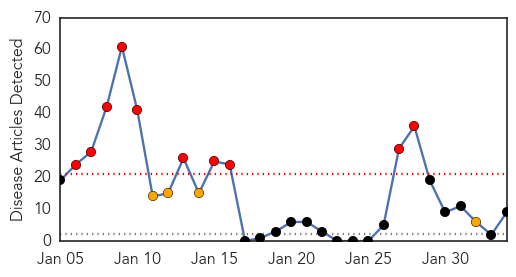
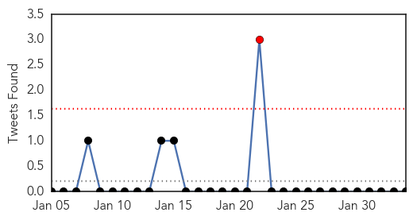
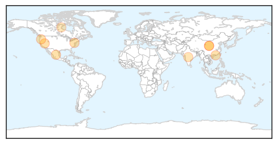
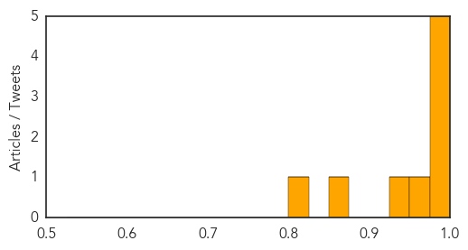

Toggle navigation
Early Warning
Daily Alerts
Influenza
Feb 03, 2014
Compare to:
-
Dengue Fever
Hemmorhagic Fever
Mold/Fungal Infection
Meningitis
Pertussis / Whooping Cough
Middle East Respiratory Syndrome
Cholera
Hepatitis
Chikungunya
Yellow Fever
Bubonic Plague
West Nile Virus
Swine Flu
Ebola
Measles
Unknown
Mumps
30 Day Trends
Web: 10
alerts
, 4
warnings
Twitter: 1
alerts
, 0
warnings
Top Articles:
0.995
Doctor visits for flu are decreasing
0.990
Canada is watching rapidly mounting H7N9 case count, but still feels risk is low
0.989
Flu death toll climbs to 12 in Southern Nevada
0.977
NEW: Rhode Island’s First Flu-Related Deaths of Season Reported
0.977
CDC Director: China Bird Flu Outbreak Closely Watched
0.954
2013-14 flu season: Some hospitals lift flu-related restrictions on visitors as illness eases
0.948
Canada monitoring as number of H7N9 bird flu cases mount
0.854
Black Death Likely Altered European Genes
0.806
Queensland researchers begin development of system to detect disease outbreaks online
Top Tweets:
No tweets found for Feb 03, 2014
Web/News Articles

Tweets

Article Locations

Article Confidences
